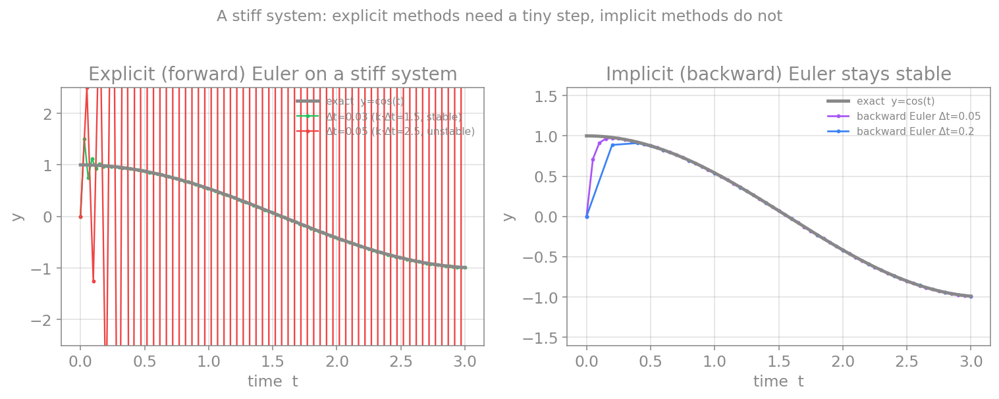
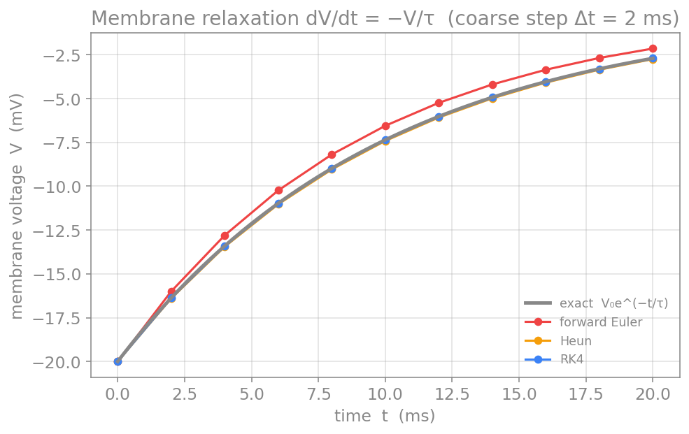
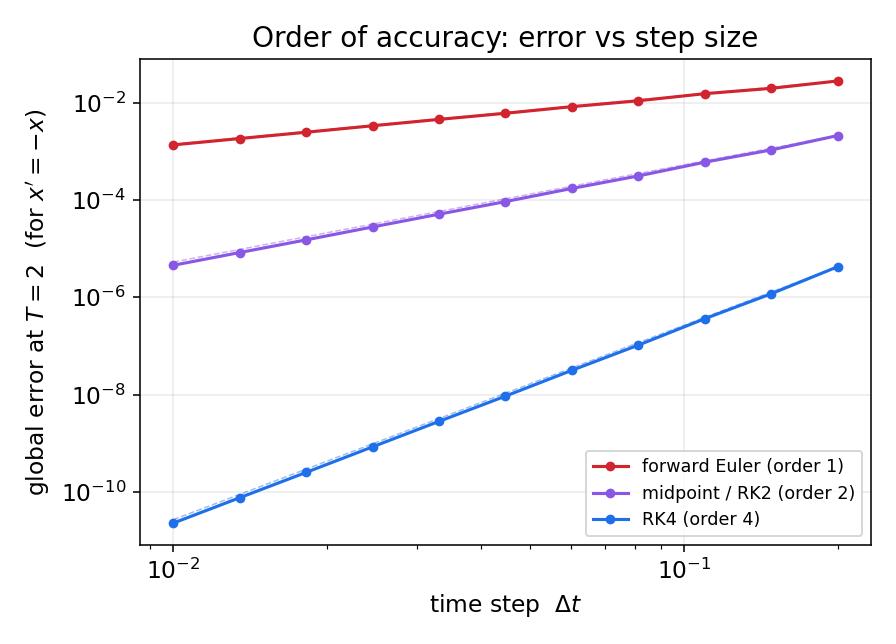
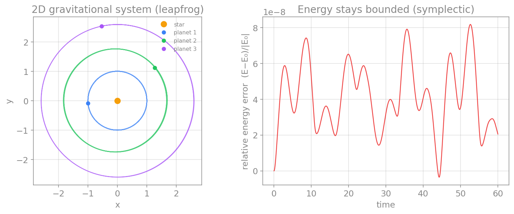
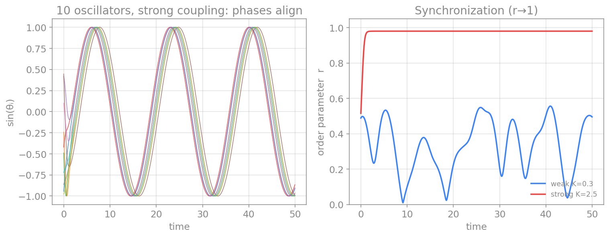
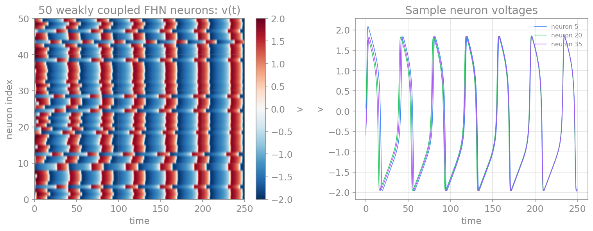

حل عددی معادلات دیفرانسیل معمولی
تقریباً همهٔ مدلهای این کتاب، از هاجکین–هاکسلی تا ویلسون–کوان، بهصورتِ معادلهٔ دیفرانسیلِ معمولی نوشته میشوند و جوابِ تحلیلیِ بسته ندارند. در فصلهای پیش دیدیم چگونه مشتق و انتگرال را بهصورت عددی تقریب بزنیم؛ اکنون این ابزارها را به کار میگیریم تا یک معادلهٔ دیفرانسیل را در زمان حل کنیم. این فصل، روشهای پایهای را که در سراسرِ کتاب به کار میبریم گرد هم میآورد.
مسئلهٔ مقدار اولیه
مسئلهای که میخواهیم حل کنیم، مسئلهٔ مقدار اولیه (Initial Value Problem) نام دارد. صورتِ کلیِ آن چنین است:
به عبارتِ دیگر، آهنگِ تغییرِ حالتِ سامانه (\(\mathbf{f}\)) و حالتِ آغازینِ آن (\(\mathbf{x}_0\)) را میدانیم و میخواهیم \(\mathbf{x}(t)\) را برای \(t > t_0\) بیابیم. همهٔ روشهایی که در ادامه میآیند، یک ایدهٔ مشترک دارند: زمان را به گامهای کوچکِ \(\Delta t\) میشکنند و از حالتِ کنونی، حالتِ گامِ بعد را میسازند. تفاوتِ روشها در این است که شیب (یعنی \(\mathbf{f}\)) را کجا و چند بار ارزیابی میکنند.
برای آزمونِ روشها، در سراسرِ این فصل از معادلهٔ سادهٔ خطیِ \(x' = -x\) استفاده میکنیم که جوابِ دقیقِ آن \(x(t) = x_0 e^{-t}\) است؛ این به ما اجازه میدهد خطای هر روش را دقیقاً بسنجیم. در پایان نیز یک مثالِ نورونی واقعی را حل میکنیم.
روش اویلر پیشرو
سادهترین روش، مستقیماً از تعریفِ مشتق و تفاضلِ پیشروی فصلِ مشتق میآید. اگر \(\frac{d\mathbf{x}}{dt} \approx \frac{\mathbf{x}(t+\Delta t) - \mathbf{x}(t)}{\Delta t}\) را در معادله بگذاریم و برای حالتِ گامِ بعد حل کنیم:
این روش صریح است (سمتِ راست تنها به مقادیرِ معلومِ گامِ کنونی بستگی دارد) و مرتبهٔ یک: خطای محلی در هر گام از مرتبهٔ \(\mathcal{O}(\Delta t^2)\) و خطای سراسری از مرتبهٔ \(\mathcal{O}(\Delta t)\) است. سادگیِ آن بهای پایداریِ ضعیف دارد: برای گامِ بزرگ واگرا میشود، و چنانکه خواهیم دید، برای سامانههای نوسانی انرژی را بهطور مصنوعی میافزاید.
def forward_euler(f, x, t, dt):
return x + dt * f(x, t)
روش اویلر پسرو
اگر بهجای شیبِ گامِ کنونی، شیبِ گامِ بعد را به کار بریم، روشِ ضمنی اویلر پسرو بهدست میآید:
اکنون \(\mathbf{x}_{n+1}\) در هر دو سو ظاهر میشود، پس در هر گام باید یک معادله را حل کنیم (برای سامانههای خطی یک دستگاهِ خطی، و برای غیرخطی با روشی مانندِ نیوتن). در ازای این هزینه، روش پایداریِ بسیار بهتری دارد. برای معادلهٔ نمونهٔ خطیِ \(x' = -x\)، حل صریح است و به \(x_{n+1} = x_n / (1 + \Delta t)\) میرسد.
پیشرفته (اختیاری): سامانههای سفت
اویلر پسرو و دیگر روشهای ضمنی، برای سامانههای سفت (stiff) مناسباند؛ سامانههایی که در آنها فرایندهایی با مقیاسهای زمانیِ بسیار متفاوت همزمان رخ میدهند، یعنی برخی متغیرها بسیار سریع و برخی بسیار کند تغییر میکنند. در چنین مواردی، روشهای صریح ناچارند گامِ زمانی را بهخاطرِ سریعترین متغیر بسیار کوچک نگه دارند، حتی وقتی بقیهٔ سامانه کند است؛ روشهای ضمنی این محدودیت را ندارند. عیبِ اویلر پسرو، میرایی عددیِ مصنوعی است که در سامانههای نوسانی دامنه را بهتدریج کم میکند.
شکلِ زیر این پدیده را نشان میدهد. سامانهای را در نظر بگیرید که جوابِ دقیقش \(y = \cos(t)\) است اما یک مؤلفهٔ بسیار سریع (با ضریبِ بزرگِ \(k\)) نیز دارد. برای اویلرِ پیشرو، پایداری تنها زمانی برقرار است که \(k\,\Delta t < 2\) باشد؛ اگر گام اندکی از این حد بزرگتر شود، جوابِ عددی بهجای دنبالکردنِ منحنیِ آرام، به نوسانهای مهارگسیخته میافتد. اما اویلرِ پسرو حتی با گامهای بسیار بزرگتر پایدار میماند.

روش هون
دقتِ اویلر را میتوان با یک ایدهٔ ساده بهبود داد: بهجای استفاده از شیب در ابتدای گام، میانگینِ شیبِ ابتدا و انتهای گام را به کار ببریم. اما شیبِ انتهای گام به حالتِ انتهایی نیاز دارد که هنوز نمیدانیم؛ پس نخست با یک گامِ اویلر آن را پیشبینی میکنیم و سپس تصحیح میکنیم. این روشِ «پیشبینی–تصحیح» را روشِ هون مینامند:
در اینجا \(\tilde{\mathbf{x}}_{n+1}\) همان پیشبینیِ اویلر است؛ سپس شیب را در آن نقطه دوباره میسنجیم و میانگینِ دو شیب را برای گامِ نهایی به کار میبریم. روشِ هون مرتبهٔ دو است (\(\mathcal{O}(\Delta t^2)\)) و نمونهای از روشهای رونگه–کوتای مرتبهٔ دو بهشمار میرود.
def heun(f, x, t, dt):
k1 = f(x, t)
x_predict = x + dt * k1 # Euler prediction
k2 = f(x_predict, t + dt)
return x + (dt / 2.0) * (k1 + k2) # correction with averaged slope
روش نقطهٔ میانی
راهِ دیگرِ رسیدن به مرتبهٔ دو، ارزیابیِ شیب در میانهٔ گام است. این روش نیز نمونهای از رونگه–کوتای مرتبهٔ دو است:
خطای سراسریِ آن نیز از مرتبهٔ \(\mathcal{O}(\Delta t^2)\) است؛ یعنی نصفکردنِ گام، خطا را به یکچهارم میرساند.
def midpoint(f, x, t, dt):
k1 = f(x, t)
return x + dt * f(x + 0.5*dt*k1, t + 0.5*dt)
روش رونگه–کوتای مرتبهٔ چهار (RK4)
پرکاربردترین روشِ همهمنظوره، رونگه–کوتای مرتبهٔ چهار (RK4) است که با ترکیبِ وزندارِ چهار ارزیابیِ شیب در هر گام، خطای سراسریِ \(\mathcal{O}(\Delta t^4)\) بهدست میدهد:
def rk4(f, x, t, dt):
k1 = f(x, t)
k2 = f(x + 0.5*dt*k1, t + 0.5*dt)
k3 = f(x + 0.5*dt*k2, t + 0.5*dt)
k4 = f(x + dt*k3, t + dt)
return x + (dt/6.0)*(k1 + 2*k2 + 2*k3 + k4)
روشهای گاموفقی مانندِ RK45 (زوجِ دورماند–پرینس) یک گام جلوتر میروند: در هر گام دو تقریب با مرتبههای متفاوت (چهار و پنج) محاسبه میکنند و از تفاوتِ آنها برای برآوردِ خطا و تنظیمِ خودکارِ \(\Delta t\) استفاده میکنند؛ گامِ کوچک آنجا که جواب تند تغییر میکند و گامِ بزرگ آنجا که هموار است. تابعِ solve_ivp در کتابخانهٔ scipy بهطور پیشفرض همین روش را به کار میبرد و برای بیشترِ کارهای غیرسفت انتخابِ خوبی است.
یک حلقهٔ حل ساده
هر یک از توابعِ بالا تنها یک گام را جلو میبرد. برای حلِ کامل، آنها را در یک حلقه روی بازهٔ زمانی تکرار میکنیم:
import numpy as np
def integrate(method, f, x0, t0, t_end, dt):
n_steps = int(round((t_end - t0) / dt))
t = t0
x = x0
xs = [x0]
for _ in range(n_steps):
x = method(f, x, t, dt)
t = t + dt
xs.append(x)
return np.array(xs)
مثال نورونی: واهلش ولتاژ غشا
واهلشِ ولتاژ غشای یک نورون ساده، وقتی ورودی ندارد، با معادلهٔ \(\frac{dV}{dt} = -V/\tau\) توصیف میشود (همان مدلِ RC که در فصلِ غشای تحریکپذیر دیدیم). جوابِ دقیقِ آن \(V(t) = V_0\,e^{-t/\tau}\) است. بیایید آن را با گامِ نسبتاً درشتِ \(\Delta t = 2\) و \(\tau = 10\) تا زمانِ \(t = 20\) حل کنیم:
tau = 10.0
V0 = -20.0 # initial displacement from rest, in mV
def f(V, t):
return -V / tau
exact = V0 * np.exp(-20.0 / tau)
for name, method in [("forward_euler", forward_euler),
("heun", heun),
("rk4", rk4)]:
V = integrate(method, f, V0, 0.0, 20.0, dt=2.0)[-1]
print(f"{name:14s} V(20) = {V:9.5f} error = {abs(exact - V):.2e}")
با این گامِ درشت، اویلرِ پیشرو خطای بزرگی دارد، هون آن را حدودِ ده برابر کم میکند، و RK4 تقریباً به مقدارِ دقیق میرسد. همین تفاوت، اهمیتِ انتخابِ روش را نشان میدهد.

دستگاههای معادلات درهمتنیده
تا اینجا یک معادلهٔ تکمتغیره را حل کردیم. اما بیشترِ مدلهای جالبِ علوم اعصاب، چند متغیر دارند که آهنگِ تغییرِ هرکدام به دیگری بستگی دارد. به چنین مجموعهای، یک دستگاه معادلاتِ دیفرانسیلِ درهمتنیده (coupled ODEs) میگویند. خبرِ خوب این است که هیچ روشِ تازهای لازم نیست: تنها کافی است حالتِ سامانه را بهجای یک عدد، یک بردار بگیریم، و تابعِ \(\mathbf{f}\) نیز برداری از آهنگِ تغییرها را برگرداند. همان معادلهٔ بهروزرسانیِ \(\mathbf{x}_{n+1} = \mathbf{x}_n + \Delta t\,\mathbf{f}(\mathbf{x}_n, t_n)\) بدونِ تغییر کار میکند، تنها اینبار روی بردارها.
نمونهٔ خوبِ نورونی، مدلِ فیتزهیو–ناگومو است که با دو متغیرِ درهمتنیده، رفتارِ شلیکِ یک نورون را بهصورتِ سادهشده توصیف میکند: متغیرِ \(v\) (شبیهٔ ولتاژ غشا) و متغیرِ بازیابیِ \(w\):
آهنگِ تغییرِ \(v\) به \(w\) بستگی دارد و آهنگِ تغییرِ \(w\) به \(v\)؛ پس نمیتوان آنها را جداگانه حل کرد و باید همزمان پیش برد. در کد، حالت را یک آرایهٔ numpy به شکلِ [v, w] میگیریم و تابع نیز آرایهای به شکلِ [dv, dw] برمیگرداند:
import numpy as np
def fitzhugh_nagumo(state, t, I=0.5, a=0.7, b=0.8, tau=12.5):
v = state[0]
w = state[1]
dv = v - v**3 / 3 - w + I
dw = (v + a - b * w) / tau
return np.array([dv, dw])
# the SAME integrate loop and rk4 step from before work unchanged,
# because they only use vector addition and scalar multiplication
trajectory = integrate(rk4, fitzhugh_nagumo,
x0=np.array([0.0, 0.0]),
t0=0.0, t_end=200.0, dt=0.1)
v_trace = trajectory[:, 0] # first column: v over time
w_trace = trajectory[:, 1] # second column: w over time
نکتهٔ کلیدی این است که توابعِ forward_euler، heun و rk4 که پیشتر نوشتیم، بدونِ هیچ تغییری روی این دستگاه کار میکنند؛ زیرا تنها از جمعِ بردارها و ضربِ بردار در عدد استفاده میکنند، و numpy این عملها را روی کلِ آرایه انجام میدهد. همین، زیباییِ این روشهاست: یکبار آنها را مینویسیم و برای هر دستگاهی، از یک نورون تا هزاران نورونِ بههمپیوسته، به کار میبریم.
تبدیل معادلهٔ مرتبهٔ دوم به دستگاه مرتبهٔ اول
همهٔ روشهایی که تا اینجا دیدیم، برای معادلاتِ مرتبهٔ اول نوشته شدهاند (تنها مشتقِ اول در آنها ظاهر میشود). اما بسیاری از معادلاتِ فیزیکی مرتبهٔ دوماند؛ برای نمونه، نوسانگرِ هماهنگ:
چگونه این را با روشهایی که داریم حل کنیم؟ ترفندِ ساده و پرکاربرد این است: هر معادلهٔ مرتبهٔ دوم را میتوان به یک دستگاهِ دو معادلهٔ مرتبهٔ اولِ درهمتنیده تبدیل کرد. برای این کار، یک متغیرِ تازه برای مشتقِ اول تعریف میکنیم. اگر سرعت را \(v = \frac{dx}{dt}\) بنامیم، آنگاه:
اکنون بهجای یک معادلهٔ مرتبهٔ دوم، دو معادلهٔ مرتبهٔ اول داریم که دقیقاً همان دستگاهِ درهمتنیدهای است که در بخشِ پیش دیدیم. حالتِ سامانه بردارِ [x, v] است:
def harmonic_oscillator(state, t, omega=2.0):
x = state[0]
v = state[1]
dx = v
dv = -omega**2 * x
return np.array([dx, dv])
trajectory = integrate(rk4, harmonic_oscillator,
x0=np.array([1.0, 0.0]), # start at x=1, v=0
t0=0.0, t_end=10.0, dt=0.01)
همین ترفند برای هر معادلهٔ مرتبهٔ بالاتر نیز کار میکند: یک معادلهٔ مرتبهٔ \(n\)اُم به دستگاهی از \(n\) معادلهٔ مرتبهٔ اول تبدیل میشود، با تعریفِ متغیرهای تازه برای مشتقهای متوالی. به این ترتیب، تنها با روشهای مرتبهٔ اول میتوان هر معادلهٔ دیفرانسیلی را حل کرد.
پیوند با سیستمهای دینامیکی
این بردارِ حالت، همان مفهومِ فضای حالت در نظریهٔ سیستمهای دینامیکی است. برای نوسانگرِ هماهنگ، نقطهٔ \((x, v)\) یک نقطه در صفحهٔ فاز است و جوابِ عددی، مسیری در این صفحه میسازد. همین دیدگاه است که در فصلِ سیستمهای دینامیکی برای تحلیلِ نقاطِ ثابت، چرخههای حدی و پایداری به کار میرود. به بیانِ دیگر، روشهای عددیِ این فصل، ابزارِ محاسباتیاند و نظریهٔ سیستمهای دینامیکی، چارچوبِ تحلیلیِ همان مسیرهاست.
مرتبهٔ دقت در عمل
تفاوتِ مرتبهها را میتوان مستقیماً دید: اگر خطای سراسری را در زمانِ پایانیِ ثابت بر حسبِ \(\Delta t\) در مقیاسِ لگاریتمی رسم کنیم، هر روش خطی با شیبی برابرِ مرتبهاش ظاهر میشود.

این را میتوان با کد نیز تأیید کرد. اگر خطای هر روش را برای چند گامِ کوچکشونده بسنجیم و شیبِ لگاریتمی را برآورد کنیم، به مرتبههای ۱، ۲ و ۴ میرسیم:
def g(x, t):
return -x
def final_error(method, dt, t_end=2.0):
x = 1.0
t = 0.0
n_steps = int(round(t_end / dt))
for _ in range(n_steps):
x = method(g, x, t, dt)
t = t + dt
return abs(x - np.exp(-t_end))
for name, method, steps in [("euler", forward_euler, [0.2, 0.1, 0.05, 0.025]),
("heun", heun, [0.2, 0.1, 0.05, 0.025]),
("rk4", rk4, [0.4, 0.2, 0.1, 0.05])]:
errors = [final_error(method, dt) for dt in steps]
slope = np.polyfit(np.log(steps), np.log(errors), 1)[0]
print(f"{name:6s} estimated order = {slope:.2f}")
این تفاوت در عمل اهمیت دارد. برای نمونه، در مدلِ فیتزهیو–ناگومو با گامِ نسبتاً بزرگ، اویلرِ پیشرو خطای فازِ محسوسی انباشت میکند، حالآنکه RK4 با همان گام به جوابِ مرجع بسیار نزدیک میماند:

دینامیک هامیلتونی و انتگرالگیرهای سیمپلکتیک
پیشرفته (اختیاری)
این بخش برای سامانههای پایستهٔ انرژی (هامیلتونی) اهمیت دارد و برای ادامهٔ مطالبِ نورونیِ کتاب ضروری نیست؛ اما برای کسانی که با سامانههای نوسانیِ بلندمدت کار میکنند بسیار سودمند است.
برای سامانههای مرتبهٔ دومِ مکانیکی به شکلِ \(\ddot{x} = a(x)\) (که در آن نیرو تنها به مکان بستگی دارد)، دو روش بسیار رایجاند: پرشقورباغه (leapfrog) و ورلهٔ سرعتی (Velocity Verlet). در ادامه هر دو را روی نوسانگرِ هماهنگ پیاده میکنیم.
پرشقورباغه برای نوسانگر هماهنگ
باز هم از معادلهٔ نوسانگرِ هماهنگ آغاز میکنیم:
یعنی \(\ddot{x} = a(x)\) با شتابِ \(a(x) = -\omega^2 x\). ایدهٔ پرشقورباغه این است که سرعت و مکان را «درهمبافته» پیش ببریم؛ سرعت در نیمهگامها و مکان در گامهای کامل محاسبه میشود، چنانکه گویی روی هم میجهند (نامِ روش از همینجا میآید). سه گامِ گسستهٔ آن چنیناند:
گامِ نخست، سرعت را با نیمِ شتابِ کنونی تا میانهٔ گام جلو میبرد (نیمهگامِ سرعت). گامِ دوم، مکان را با همین سرعتِ نیمهگام بهطور کامل جلو میبرد. گامِ سوم، سرعت را با نیمِ شتابِ تازه تا انتهای گام کامل میکند. پیادهسازیِ آن چنین است:
def leapfrog(x, v, dt, omega=2.0):
a = -omega**2 * x # acceleration at current position
v_half = v + 0.5 * a * dt # half-step velocity (first kick)
x_new = x + v_half * dt # full-step position (drift)
a_new = -omega**2 * x_new # acceleration at new position
v_new = v_half + 0.5 * a_new * dt # complete the velocity (second kick)
return x_new, v_new
# integrate the harmonic oscillator and track the energy
omega = 2.0
x = 1.0
v = 0.0
dt = 0.1
energy = []
for _ in range(2000):
x, v = leapfrog(x, v, dt, omega)
energy.append(0.5 * v**2 + 0.5 * omega**2 * x**2)
مانندِ ورلهٔ سرعتی، انرژیِ این روش نیز پیرامونِ مقدارِ آغازین کراندار میماند و در شبیهسازیهای بلندمدت دور نمیشود.
پرشقورباغه و ورلهٔ سرعتی، دو چهره از یک روش
این دو روش در واقع بهلحاظِ ریاضی همارزند و دقیقاً همان مسیر را تولید میکنند (تفاوتِ عددیِ آنها در حدِ خطای گردکردنِ ماشین است). تفاوتشان تنها در نحوهٔ نگهداریِ سرعت است: پرشقورباغه سرعت را در نیمهگامها نگه میدارد، حالآنکه ورلهٔ سرعتی مکان و سرعت را در گامهای همزمان نگه میدارد. به همین دلیل، وقتی به سرعت و مکان در یک لحظهٔ یکسان نیاز داریم (مثلاً برای محاسبهٔ انرژی)، ورلهٔ سرعتی راحتتر است.
ورلهٔ سرعتی برای نوسانگر هماهنگ
بیایید همان نوسانگرِ هماهنگ را اینبار با ورلهٔ سرعتی (Velocity Verlet) حل کنیم؛ صورتی از همین خانواده که در عمل بیش از همه به کار میرود. باز هم با شتابِ \(a(x) = -\omega^2 x\) سر و کار داریم. ایدهٔ ورلهٔ سرعتی این است که در هر گام، نخست مکان را با مکان، سرعت و شتابِ کنونی بهروز کنیم، سپس سرعت را با میانگینِ شتابِ کنونی و شتابِ تازه. سه گامِ گسستهٔ آن چنیناند:
گامِ نخست، همان بسطِ تیلورِ مکان تا مرتبهٔ دوم است (مکانِ تازه از روی مکان، سرعت و شتابِ کنونی). گامِ دوم، شتاب را در مکانِ تازه حساب میکند. گامِ سوم، سرعت را با میانگینِ شتابِ ابتدا و انتهای گام بهروز میکند؛ همین میانگینگیری است که به روش دقتِ مرتبهٔ دو و ساختارِ سیمپلکتیک میبخشد. پیادهسازیِ آن مستقیم است:
def velocity_verlet(x, v, dt, omega=2.0):
a = -omega**2 * x # acceleration at current position
x_new = x + v * dt + 0.5 * a * dt**2
a_new = -omega**2 * x_new # acceleration at new position
v_new = v + 0.5 * (a + a_new) * dt # average of old and new acceleration
return x_new, v_new
# integrate the harmonic oscillator for many steps and track the energy
omega = 2.0
x = 1.0
v = 0.0
dt = 0.1
energy = []
for _ in range(2000):
x, v = velocity_verlet(x, v, dt, omega)
energy.append(0.5 * v**2 + 0.5 * omega**2 * x**2)
اگر انرژیِ کلِ سامانه، یعنی \(E = \tfrac{1}{2}v^2 + \tfrac{1}{2}\omega^2 x^2\)، را در طولِ شبیهسازی دنبال کنیم، میبینیم که پیرامونِ مقدارِ آغازین نوسانِ بسیار کوچکی دارد اما هرگز بهطور مداوم دور نمیشود؛ حتی پس از هزاران گام. این درست همان رفتاری است که از یک انتگرالگیرِ سیمپلکتیک انتظار داریم. برای مقایسه، اگر همین سامانه را با اویلرِ پیشرو حل کنیم، انرژی بهطور نمایی رشد میکند و جواب پس از مدتی کاملاً بیاعتبار میشود.
دستهای ویژه از سامانهها، سامانههای هامیلتونی هستند که در آنها کمیتی به نامِ انرژی (هامیلتونیِ \(H\)) در طولِ حرکت پایسته میماند و جریانِ سامانه حجمِ فضای فاز را حفظ میکند (قضیهٔ لیوویل). نوسانگرِ هماهنگ سادهترین نمونه است. مشکل اینجاست که روشهای همهمنظوره مانندِ اویلر یا حتی RK4 این ساختار را حفظ نمیکنند: انرژیِ عددی بهتدریج از مقدارِ درستش دور میشود (در اویلرِ پیشرو میافزاید، در اویلرِ پسرو میکاهد) و در شبیهسازیهای بلندمدت جواب بیاعتبار میشود.
انرژیِ گامِ بعد را برای هر روش حساب کنیم
این تفاوتِ رفتارها را میتوان بهصورتِ جبری و دقیق نشان داد. نوسانگرِ هماهنگ را به دستگاهِ مرتبهٔ اول مینویسیم (همان ترفندِ بخشِ پیش): با حالتِ \((x, v)\)، انرژیِ سامانه \(E = \tfrac{1}{2}v^2 + \tfrac{1}{2}\omega^2 x^2\) است که در حرکتِ واقعی باید ثابت بماند. حال انرژیِ گامِ بعد، یعنی \(E_{n+1}\)، را برای هر روش حساب میکنیم.
اویلرِ پیشرو. گامهای گسسته چنیناند:
با جایگذاری در فرمولِ انرژی و سادهکردن (جملههای مرتبهٔ اولِ \(\Delta t\) حذف میشوند):
عامل \((1 + \omega^2 \Delta t^2)\) همواره بزرگتر از یک است، پس انرژی در هر گام بزرگتر میشود و در درازمدت نمایی رشد میکند؛ دامنهٔ نوسان بهطور مصنوعی منفجر میشود.
اویلرِ پسرو. اینجا گامها ضمنیاند و \(x_{n+1}\) و \(v_{n+1}\) در هر دو سو ظاهر میشوند؛ پس از حلِ دستگاهِ خطی و جایگذاری در انرژی، نتیجه دقیقاً وارونهٔ حالتِ پیشین میشود:
اینبار عامل کوچکتر از یک است، پس انرژی در هر گام میرا میشود و نوسان بهتدریج خاموش میگردد.
ورلهٔ سرعتی و پرشقورباغه. برای این روشها (که همارزند)، اگر همان محاسبه را انجام دهیم، دیگر به یک عاملِ سادهٔ ثابت نمیرسیم. اختلافِ انرژی چنین است:
نکتهٔ کلیدی این است که جملهٔ پیشرو، نه یک عاملِ ثابت، بلکه متناسب با \(x_n v_n\) است. در طولِ یک نوسان، \(x\) مانندِ کسینوس و \(v\) مانندِ سینوس تغییر میکند، پس حاصلضربِ \(x_n v_n\) گاه مثبت و گاه منفی است و میانگینِ آن بر یک دوره صفر میشود. بنابراین انرژی بهجای رشد یا میرایی یکطرفه، پیرامونِ مقدارِ درست بالا و پایین میرود و کراندار میماند.
همین تفاوت، چراییِ برتریِ انتگرالگیرهای سیمپلکتیک را روشن میکند: در اویلرِ پیشرو و پسرو، خطای انرژی در هر گام همعلامت است و انباشته میشود؛ اما در ورلهٔ سرعتی و پرشقورباغه، خطا علامت عوض میکند و در درازمدت یکدیگر را خنثی میکند. به همین دلیل برای شبیهسازیِ بلندمدتِ سامانههای پایسته، این روشها انتخابِ درستاند، نه لزوماً روشی با مرتبهٔ دقتِ بالاتر مانندِ RK4.
انتگرالگیرهای سیمپلکتیک برای همین ساخته شدهاند: آنها ساختارِ هندسیِ فضای فاز را دقیقاً حفظ میکنند. در نتیجه، هرچند انرژی را کاملاً ثابت نگه نمیدارند، خطای انرژی را کراندار میکنند؛ انرژی پیرامونِ مقدارِ درست نوسان میکند اما بهطور مداوم دور نمیشود. اویلرِ سیمپلکتیک (نیمهضمنی) و روشِ پرشقورباغه نمونههای سادهای از این انتگرالگیرها هستند.

به همین دلیل، هرگاه با سامانهای هامیلتونی سر و کار داشته باشیم و به شبیهسازیِ بلندمدتِ پایدار نیاز باشد، انتگرالگیرِ سیمپلکتیک انتخابِ درست است، نه لزوماً روشی با مرتبهٔ دقتِ بالاتر.
سامانههای چندجسمی: از یک ذره تا بسیار
تا اینجا بیشتر با یک جسم (یک نوسانگر، یک نورون) کار کردیم. اما در عمل، جالبترین پدیدهها از برهمکنشِ بسیاری از اجزا پدید میآیند: حرکتِ سیارهها در یک منظومه، هماهنگشدنِ جمعیتی از نوسانگرها، یا فعالیتِ شبکهای از نورونها. نکتهٔ کلیدیِ این فصل این است که برای حلِ این سامانهها به هیچ روشِ تازهای نیاز نداریم؛ تنها کافی است حالتِ سامانه را به یک بردارِ بزرگترِ شاملِ همهٔ اجزا تبدیل کنیم و همان روشهای اویلر، RK4 یا ورلهٔ سرعتی را روی آن به کار ببریم. در این بخش، سه نمونهٔ واقعی را حل میکنیم.
نمونهٔ یک: سامانهٔ گرانشیِ چندجسمی
یک منظومهٔ ساده در دو بُعد را در نظر بگیرید: یک ستارهٔ مرکزی و چند سیاره که زیرِ نیروی گرانشِ یکدیگر حرکت میکنند. این یک سامانهٔ هامیلتونی است (انرژیِ کل، یعنی جمعِ انرژیِ جنبشی و پتانسیلِ گرانشی، باید پایسته بماند)، پس از یک انتگرالگیرِ سیمپلکتیک، یعنی همان ورلهٔ سرعتی، استفاده میکنیم تا مدارها در درازمدت پایدار بمانند.
حالتِ سامانه، مکان و سرعتِ همهٔ اجسام است. شتابِ واردبر هر جسم، جمعِ نیروهای گرانشیِ همهٔ اجسامِ دیگر است (قانونِ گرانشِ نیوتن). صورتِ آرمانیِ آن چنین است:
اما این صورت یک مشکلِ عددی دارد: وقتی دو جسم بسیار به هم نزدیک میشوند، فاصلهٔ \(\lVert \mathbf{r}_j - \mathbf{r}_i \rVert\) به صفر میل میکند و شتاب بهسمتِ بینهایت واگرا میشود، که شبیهسازی را ناپایدار میکند. راهِ ساده و رایجِ رفعِ آن، افزودنِ یک طولِ نرمسازی (softening length) به نامِ \(\varepsilon\) در مخرج است:
با این تغییر، حتی وقتی دو جسم بر هم منطبق شوند، مخرج هرگز صفر نمیشود و شتاب کراندار میماند. \(\varepsilon\) باید بهقدری کوچک باشد که بر مدارهای دور اثری نگذارد، اما بهقدری بزرگ که از واگراییِ برخوردهای نزدیک جلوگیری کند. در کدِ زیر، این همان پارامترِ softening است که در مخرجِ dist_sq ظاهر میشود:
import numpy as np
import matplotlib.pyplot as plt
def accelerations(positions, masses, G=1.0, softening=0.02):
n = len(masses)
acc = np.zeros_like(positions)
for i in range(n):
for j in range(n):
if i != j:
dr = positions[j] - positions[i]
# softened distance: epsilon^2 keeps the denominator nonzero
dist_sq = dr[0]**2 + dr[1]**2 + softening**2
acc[i] = acc[i] + G * masses[j] * dr * dist_sq**(-1.5)
return acc
def nbody_verlet_step(positions, velocities, masses, dt):
a = accelerations(positions, masses)
v_half = velocities + 0.5 * a * dt
positions_new = positions + v_half * dt
a_new = accelerations(positions_new, masses)
velocities_new = v_half + 0.5 * a_new * dt
return positions_new, velocities_new
# setup: one star and three planets
masses = np.array([1.0, 0.001, 0.0006, 0.0008])
positions = np.array([[0.0, 0.0], [1.0, 0.0], [1.7, 0.0], [2.6, 0.0]])
velocities = np.array([[0.0, 0.0], [0.0, 1.0], [0.0, 0.78], [0.0, 0.62]])
# remove net momentum so the star stays near the centre
velocities[0] = -(masses[1]*velocities[1] + masses[2]*velocities[2]
+ masses[3]*velocities[3]) / masses[0]
# simulate
dt = 0.005
n_steps = 12000
trajectory = [positions.copy()]
for _ in range(n_steps):
positions, velocities = nbody_verlet_step(positions, velocities, masses, dt)
trajectory.append(positions.copy())
trajectory = np.array(trajectory)
# plot the orbits
labels = ["star", "planet 1", "planet 2", "planet 3"]
for i in range(len(masses)):
plt.plot(trajectory[:, i, 0], trajectory[:, i, 1], label=labels[i])
plt.gca().set_aspect("equal")
plt.xlabel("x")
plt.ylabel("y")
plt.legend()
plt.show()
اگر این سامانه را برای هزاران گام پیش ببریم، سیارهها روی مدارهای بسته میچرخند و انرژیِ کل، بهلطفِ روشِ سیمپلکتیک، تنها نوسانِ بسیار کوچکی پیرامونِ مقدارِ آغازین دارد و دور نمیشود.
پیشرفته (اختیاری): فراتر از نرمسازی، روشهای منظمسازی
نرمسازی ساده است، اما فیزیکِ سامانه را اندکی تغییر میدهد (نیرو در فاصلههای بسیار کوچک دیگر دقیقاً نیوتنی نیست). برای مسائلی که به دقتِ بالا در برخوردهای نزدیک نیاز دارند، مانندِ ستارهشناسیِ دینامیکی یا مسئلهٔ چندجسمی با مدارهای بسیار کشیده، روشهای دقیقترِ منظمسازی (regularization) به کار میروند. ایدهٔ کلیِ آنها، تغییرِ متغیرهای مکان و زمان است بهگونهای که تکینگیِ \(1/r^2\) بهکلی از معادلات حذف شود.
دو نمونهٔ شناختهشده، تبدیلِ کوستانهایمو–اشتیفل (Kustaanheimo–Stiefel، بهاختصار KS) است که مختصاتِ سهبعدی را با کمکِ کواترنیونها (quaternions) به یک فضای چهاربعدی میبرد و در آنجا معادلهٔ حرکت به یک نوسانگرِ هماهنگِ ساده و بدونِ تکینگی تبدیل میشود، و تبدیلِ بورده–اولین (Burdet–Heggie). در این روشها، گامِ زمانیِ مؤثر نیز به فاصله وابسته میشود و در برخوردهای نزدیک کوچکتر میشود. این روشها از حوصلهٔ این کتاب بیروناند، اما خوب است بدانیم که نرمسازی، سادهترین عضوِ خانوادهای بزرگ از ترفندهای رفعِ تکینگی است.

نمونهٔ دو: همگامسازیِ ده نوسانگرِ بههمپیوسته
یکی از شگفتانگیزترین پدیدههای سامانههای چندجزئی، همگامسازی (synchronization) است: مجموعهای از نوسانگرها که هر یک بسامدِ طبیعیِ متفاوتی دارند، اگر بهاندازهٔ کافی به هم جفت شوند، سرانجام همفاز میشوند. مدلِ کلاسیکِ این پدیده، مدلِ کوراموتو است. در آن، فازِ هر نوسانگر (\(\theta_i\)) چنین تغییر میکند:
که در آن \(\omega_i\) بسامدِ طبیعیِ نوسانگرِ \(i\) و \(K\) شدتِ جفتشدگی است. اینجا سامانه پایسته نیست (انرژی پایستهای ندارد)، پس از روشِ همهمنظورهٔ RK4 استفاده میکنیم. حالت، بردارِ فازهای همهٔ نوسانگرهاست:
import numpy as np
import matplotlib.pyplot as plt
def kuramoto(theta, t, omega, K):
n = len(theta)
dtheta = np.zeros(n)
for i in range(n):
coupling = np.sum(np.sin(theta - theta[i]))
dtheta[i] = omega[i] + (K / n) * coupling
return dtheta
def rk4_step(f, x, t, dt, *args):
k1 = f(x, t, *args)
k2 = f(x + 0.5*dt*k1, t + 0.5*dt, *args)
k3 = f(x + 0.5*dt*k2, t + 0.5*dt, *args)
k4 = f(x + dt*k3, t + dt, *args)
return x + (dt/6.0) * (k1 + 2*k2 + 2*k3 + k4)
def order_parameter(theta):
# measures synchronization: 0 = incoherent, 1 = fully synchronized
return np.abs(np.mean(np.exp(1j * theta)))
# setup: 10 oscillators with random natural frequencies and phases
np.random.seed(0)
n = 10
omega = np.random.normal(0.0, 0.5, n)
theta0 = np.random.uniform(0, 2*np.pi, n)
dt = 0.05
n_steps = 1000
# simulate for a weak and a strong coupling, tracking the order parameter
for K in [0.3, 2.5]:
theta = theta0.copy()
r_values = []
for _ in range(n_steps):
theta = rk4_step(kuramoto, theta, 0.0, dt, omega, K)
r_values.append(order_parameter(theta))
times = np.arange(n_steps) * dt
plt.plot(times, r_values, label=f"K = {K}")
plt.xlabel("time")
plt.ylabel("order parameter r")
plt.ylim(0, 1.05)
plt.legend()
plt.show()
برای سنجشِ میزانِ همگامی، از یک کمیت به نامِ پارامترِ نظم استفاده میکنیم که از صفر (کاملاً نامنظم) تا یک (کاملاً همگام) تغییر میکند. اگر شبیهسازی را با جفتشدگیِ ضعیف و قوی اجرا کنیم، میبینیم که با جفتشدگیِ قوی، نوسانگرها بهسرعت همفاز میشوند و پارامترِ نظم به یک نزدیک میشود، اما با جفتشدگیِ ضعیف نامنظم میمانند.

نمونهٔ سه: شبکهای از پنجاه نورونِ فیتزهیو–ناگومو
سرانجام به یک نمونهٔ نورونیِ واقعی میرسیم: شبکهای از \(N=50\) نورونِ فیتزهیو–ناگومو که بهصورتِ ضعیف به هم جفت شدهاند. هر نورون دو متغیرِ خود (\(v_i\) و \(w_i\)) را دارد، و جفتشدگی از راهِ میدانِ میانگینِ ولتاژِ همهٔ نورونها اعمال میشود. معادلهٔ هر نورون چنین است:
که در آن \(\bar{v}\) میانگینِ ولتاژِ همهٔ نورونها و \(c\) شدتِ جفتشدگیِ ضعیف است. حالتِ کلِ سامانه، یک بردارِ \(2N\)تایی است (پنجاه متغیرِ \(v\) و پنجاه متغیرِ \(w\)). باز هم از RK4 استفاده میکنیم:
import numpy as np
import matplotlib.pyplot as plt
def fhn_network(state, t, I, a, b, tau, c, n):
v = state[:n]
w = state[n:]
v_mean = np.mean(v) # mean-field coupling
dv = v - v**3 / 3 - w + I + c * (v_mean - v)
dw = (v + a - b * w) / tau
return np.concatenate([dv, dw])
def rk4_step(f, x, t, dt, *args):
k1 = f(x, t, *args)
k2 = f(x + 0.5*dt*k1, t + 0.5*dt, *args)
k3 = f(x + 0.5*dt*k2, t + 0.5*dt, *args)
k4 = f(x + dt*k3, t + dt, *args)
return x + (dt/6.0) * (k1 + 2*k2 + 2*k3 + k4)
# setup: 50 neurons with random initial states
np.random.seed(2)
n = 50
I, a, b, tau, c = 0.5, 0.7, 0.8, 12.5, 0.04 # c is the weak coupling strength
v0 = np.random.uniform(-2, 2, n)
w0 = np.random.uniform(-1, 1, n)
state = np.concatenate([v0, w0])
dt = 0.1
n_steps = 2500
# simulate, storing every neuron's voltage at each step
voltage = np.zeros((n_steps, n))
for k in range(n_steps):
state = rk4_step(fhn_network, state, 0.0, dt, I, a, b, tau, c, n)
voltage[k] = state[:n]
# plot the voltage of all neurons as a heatmap
plt.imshow(voltage.T, aspect="auto", origin="lower",
cmap="RdBu_r", extent=[0, n_steps*dt, 0, n], vmin=-2, vmax=2)
plt.xlabel("time")
plt.ylabel("neuron index")
plt.colorbar(label="v")
plt.show()
نورونها در آغاز با حالتهای تصادفی شروع میکنند و ناهماهنگ شلیک میکنند، اما بهمرورِ زمان و بهسببِ جفتشدگیِ ضعیف، فعالیتشان بهتدریج همگام میشود. این، سادهترین مدلِ ریاضیِ پدیدهای است که در شبکههای واقعیِ مغز نیز دیده میشود: ظهورِ نظمِ جمعی از برهمکنشِ اجزای منفرد.

این سه نمونه یک پیامِ مشترک دارند: روشهای عددیِ این فصل، بدونِ هیچ تغییری، از یک جسم تا صدها جسم را پوشش میدهند. تنها چیزی که بزرگ میشود، بردارِ حالت است. همین ویژگی است که به ما اجازه میدهد از یک نورونِ منفرد به شبکههای بزرگِ مغزی برسیم، که موضوعِ فصلهای بعدیِ کتاب است.
چرخ را دوباره اختراع نکنیم
تا اینجا روشها را از پایه نوشتیم، و این برای فهمیدنِ آنها ضروری بود؛ اکنون میدانیم اویلر، RK4 و ورلهٔ سرعتی دقیقاً چه میکنند، خطایشان از کجا میآید و چرا یکی بر دیگری برتری دارد. اما در کارِ روزمره و پژوهشیِ واقعی، معمولاً نباید این روشها را خودمان بنویسیم. کتابخانههای آمادهای وجود دارند که سالها آزموده شدهاند، گامِ زمانی را بهصورتِ وفقی تنظیم میکنند، خطا را کنترل میکنند و بسیار سریعترند. در پایتون، پرکاربردترینِ آنها زیرماژولِ scipy.integrate است.
دو تابعِ اصلی آن، solve_ivp (واسطِ نوین و توصیهشده) و odeint (واسطِ قدیمیتر) هستند. بیایید همان مدلِ فیتزهیو–ناگومو را که پیشتر با دست حل کردیم، اینبار با solve_ivp حل کنیم:
import numpy as np
import matplotlib.pyplot as plt
from scipy.integrate import solve_ivp
def fhn(t, state, I=0.5, a=0.7, b=0.8, tau=12.5):
v, w = state
dv = v - v**3 / 3 - w + I
dw = (v + a - b * w) / tau
return [dv, dw]
# solve over t in [0, 200] starting from (v, w) = (0, 0)
solution = solve_ivp(
fhn,
t_span=[0, 200],
y0=[0.0, 0.0],
method="RK45", # the adaptive Runge-Kutta 4(5) method
t_eval=np.linspace(0, 200, 2000), # times at which to report the solution
)
t = solution.t
v = solution.y[0]
w = solution.y[1]
plt.plot(t, v, label="v")
plt.plot(t, w, label="w")
plt.xlabel("time")
plt.ylabel("state")
plt.legend()
plt.show()
چند نکتهٔ مهم در این کد دیده میشود. نخست آنکه تابعِ سمتِ راست در solve_ivp ترتیبِ ورودیِ (t, state) دارد (برخلافِ odeint که (state, t) میخواهد). دوم آنکه آرگومانِ method روشِ حل را تعیین میکند؛ مقدارِ پیشفرضِ "RK45" همان زوجِ وفقیِ دورماند–پرینس است که در بخشِ روشهای گاموفقی به آن اشاره کردیم. سوم آنکه t_eval نقاطی را که میخواهیم پاسخ در آنها گزارش شود مشخص میکند؛ اگر آن را حذف کنیم، حلگر خودش نقاطِ گامِ وفقی را برمیگرداند که در نواحیِ پرتغییر متراکمتر و در نواحیِ هموار پراکندهترند.
واسطِ قدیمیترِ odeint نیز همان کار را میکند، تنها ترتیبِ ورودیِ تابع و چینشِ خروجی اندکی فرق دارد:
import numpy as np
from scipy.integrate import odeint
def fhn_odeint(state, t, I=0.5, a=0.7, b=0.8, tau=12.5):
v, w = state
dv = v - v**3 / 3 - w + I
dw = (v + a - b * w) / tau
return [dv, dw]
t = np.linspace(0, 200, 2000)
output = odeint(fhn_odeint, y0=[0.0, 0.0], t=t)
v = output[:, 0] # first column
w = output[:, 1] # second column
کدام روش را انتخاب کنیم؟
solve_ivp گزینههای متعددی برای آرگومانِ method دارد و انتخابِ درستِ آن مهم است. برای سامانههای عادیِ (غیرسفت) "RK45" معمولاً انتخابِ خوبی است. اما برای سامانههای سفت که پیشتر دیدیم، روشهای صریح ناکارآمدند و باید از روشهای ضمنی استفاده کرد؛ در scipy اینها با نامهای "Radau" یا "BDF" در دسترساند. برای مثال، اگر همان سامانهٔ سفتِ بخشِ پیش را با method="Radau" حل کنیم، حلگر تنها با چند گام به پاسخ میرسد، حالآنکه یک روشِ صریح ناچار است گامهای بسیار کوچک بردارد. بهبیانِ دیگر، دانشی که در این فصل دربارهٔ سفتی و پایداری بهدست آوردیم، دقیقاً همان چیزی است که به ما کمک میکند تابعِ کتابخانهای را درست به کار ببریم.
پس پیامِ این بخش یک تناقض ظاهری نیست: روشها را از پایه آموختیم تا بفهمیم، و ابزارهای آماده را به کار میبریم تا بهدرستی و با کارایی حل کنیم. کسی که میداند RK45 و روشهای ضمنی چگونه کار میکنند، بسیار بهتر از کسی که آنها را جعبهٔ سیاه میبیند، میتواند ابزارِ مناسب را برگزیند، خطاها را تفسیر کند و به نتایج اعتماد کند.
با این همه، گاه دلایلِ خوبی هست که روش را خودمان پیاده کنیم. نخست، کنترلِ کامل: وقتی خودمان هر خط از کد را نوشته باشیم، دقیقاً میدانیم چه عملیاتی و با چه ترتیبی انجام میشود و هیچ رفتارِ پنهانی پشتِ پرده نیست. این برای پژوهشِ بازتولیدپذیر، اشکالزدایی و آموزش اهمیت دارد. دوم، نیازهای ویژه: گاه مسئلهای داریم که با گزینههای استانداردِ کتابخانه جور درنمیآید؛ برای مثال یک انتگرالگیرِ سیمپلکتیکِ خاص برای یک سامانهٔ هامیلتونیِ ویژه، یا یک شیوهٔ سفارشیِ تنظیمِ گامِ زمانیِ وفقی، یا یک تبدیلِ منظمسازی برای حذفِ تکینگیای که در آن مسئلهٔ بخصوص با آن روبهرو میشویم. حتی حلگرهای آماده نیز اغلب پارامترهای پیشرفتهای دارند (دربارهٔ بیشینه و کمینهٔ گام، آستانهٔ خطا، یا شیوهٔ برخورد با تکینگیها) که استفادهٔ درست از آنها همان فهمی را میطلبد که در این فصل ساختیم. سوم، یادگیری و اطمینان: گاه برای آنکه بهراستی مطمئن شویم یک روش چه میکند، بهترین راه نوشتنِ آن از پایه و مقایسهٔ نتیجه با ابزارِ آماده است.
بنابراین قاعدهٔ کلی این است: در بیشترِ موارد از ابزارهای آماده استفاده کنید، اما بدانید چه میکنند و چرا، و هرگاه نیاز به کنترلِ کامل یا رفتارِ سفارشی داشتید، میتوانید روش را خودتان پیاده کنید. همان دانشی که این فصل به شما داد، هر دو راه را برایتان باز میگذارد.
و یک اصلِ پایانی که شاید مهمترین باشد: هر روش یا کتابخانهای که به کار میبرید، یا باید دقیقاً بدانید چه میکند، یا دستِکم خروجیِ آن را با مواردی که پاسخشان را از راهِ دیگری میدانید بسنجید. برای مثال، پیش از آنکه به یک حلگرِ آماده برای مسئلهٔ پیچیدهتان اعتماد کنید، آن را روی مسئلهای سادهتر که جوابِ تحلیلیِ آن را میدانید (مانندِ همان \(x' = -x\) با جوابِ \(e^{-t}\)، یا نوسانگرِ هماهنگ با انرژیِ پایسته) اجرا کنید و ببینید آیا نتیجه درست است. یا همان مسئله را با دو روشِ متفاوت حل کنید و نتیجهها را مقایسه کنید؛ اگر بر هم منطبق بودند، اعتمادتان بیشتر میشود. این عادتِ ساده، یعنی اعتبارسنجیِ ابزار پیش از تکیه بر آن، شما را از بسیاری از خطاهای پنهان و نتیجهگیریهای نادرست در امان نگه میدارد.
جمعبندی
جدولِ زیر روشها را کنار هم میگذارد:
| روش | مرتبه | نوع | کاربردِ شاخص |
|---|---|---|---|
| اویلر پیشرو | ۱ | صریح | آموزشی، گامِ بسیار ریز |
| اویلر پسرو | ۱ | ضمنی | سامانههای سفت |
| هون (RK2) | ۲ | صریح | پیشبینی–تصحیحِ ساده |
| نقطهٔ میانی (RK2) | ۲ | صریح | مصالحهٔ ساده دقت/هزینه |
| پرشقورباغه / ورله | ۲ | صریح (سیمپلکتیک) | سامانههای هامیلتونی |
| RK4 | ۴ | صریح | پیشفرضِ همهمنظوره |
| RK45 (گاموفقی) | ۴–۵ | صریح | کنترلِ خودکارِ خطا |
در سراسرِ این کتاب، برای سادگی و شفافیتِ آموزشی بیشتر از اویلرِ پیشرو با گامِ ریز استفاده کردهایم؛ اما برای کارِ پژوهشیِ جدی، RK4 یا solve_ivp انتخابِ بهتری است، و برای سامانههای هامیلتونی، یک انتگرالگیرِ سیمپلکتیک.
برای مطالعهٔ بیشتر:
- Hairer, E., Nørsett, S.P., Wanner, G., 1993. Solving Ordinary Differential Equations I. Springer.
- Press, W.H., Teukolsky, S.A., Vetterling, W.T., Flannery, B.P., 2007. Numerical Recipes, 3rd ed. Cambridge University Press.
- Hairer, E., Lubich, C., Wanner, G., 2006. Geometric Numerical Integration. Springer.